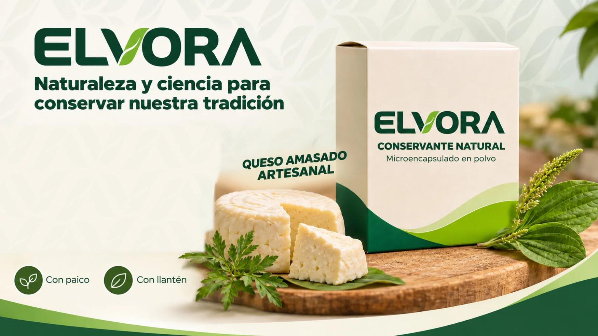
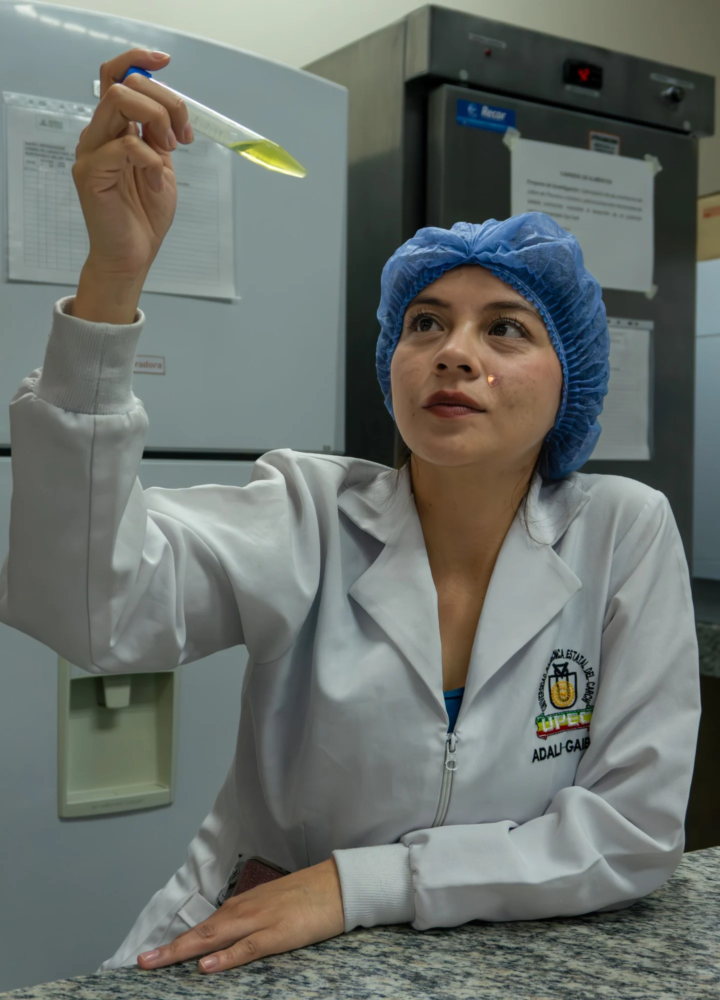
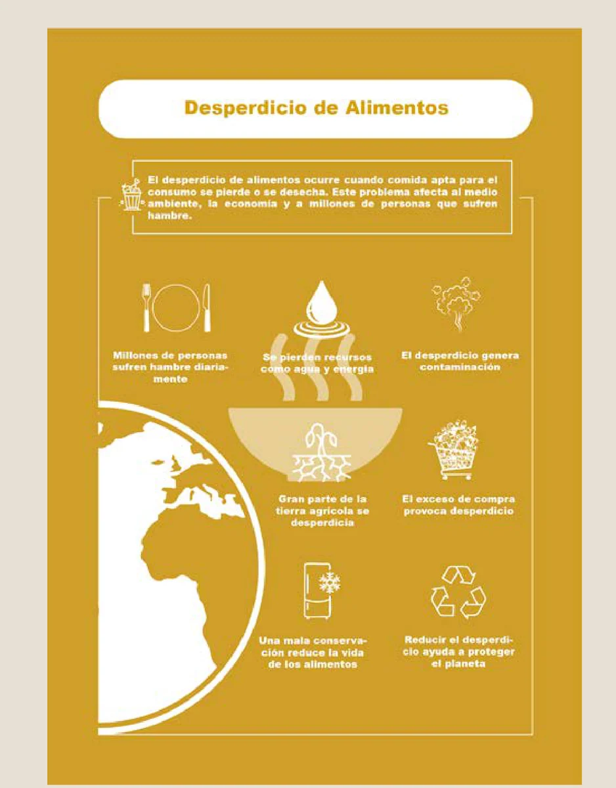
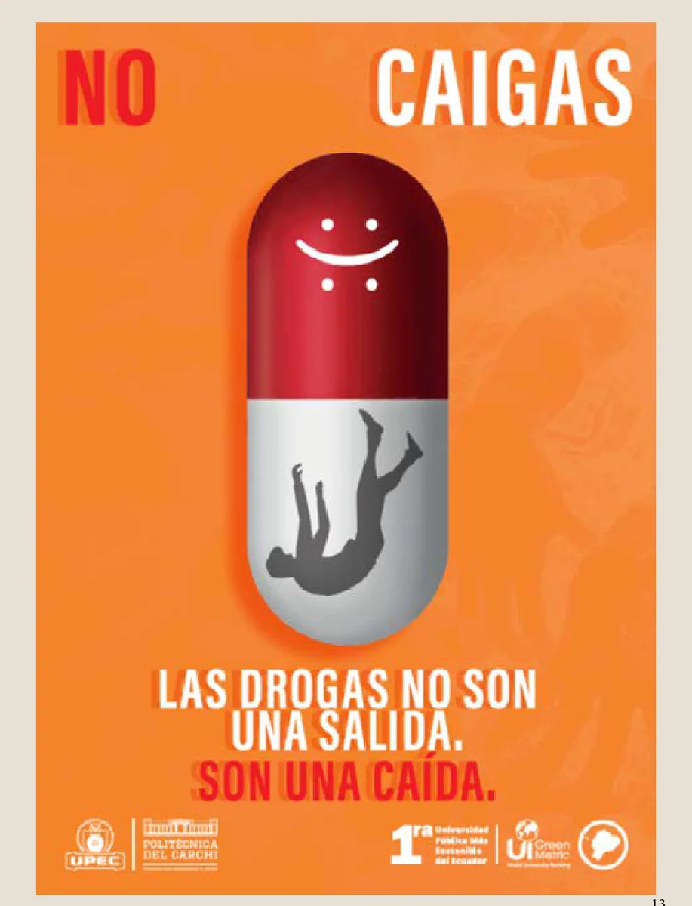
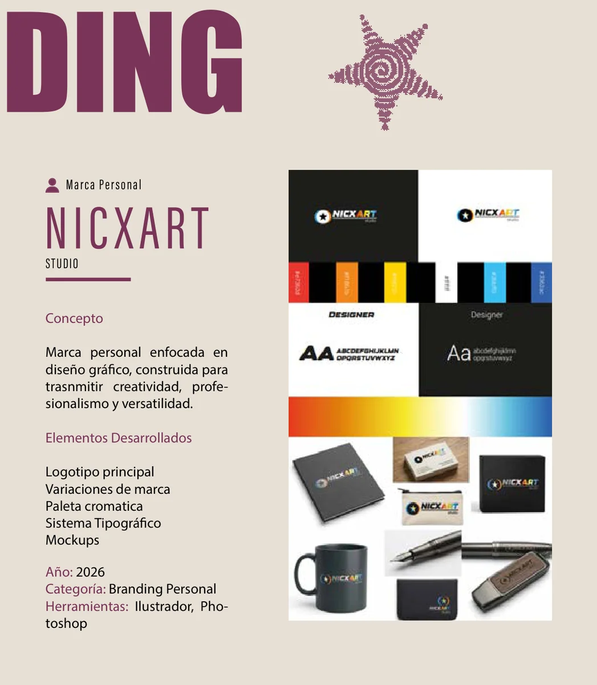

NICXART / PROYECTO 01VOID
NICXART / PROYECTO 01VOID
PORTAFOLIO / 2026
Mis proyectos.
Identidades, fotografía y piezas gráficas. Explora cada proyecto y descubre los detalles detrás de las imágenes.
NICXART / PROYECTO 01VOID
 NICXART / PROYECTO 02PUNTO
NICXART / PROYECTO 02PUNTO

NICXART / PROYECTO 03ELVORA
NICXART / PROYECTO 04RETRATOS NICXART / PROYECTO 05EDITORIAL
NICXART / PROYECTO 05EDITORIAL
 NICXART / PROYECTO 06TULCÁN
NICXART / PROYECTO 06TULCÁN

NICXART / PROYECTO 07INFOGRAFÍA
NICXART / PROYECTO 08PÓSTER
NICXART / PROYECTO 09NICXART